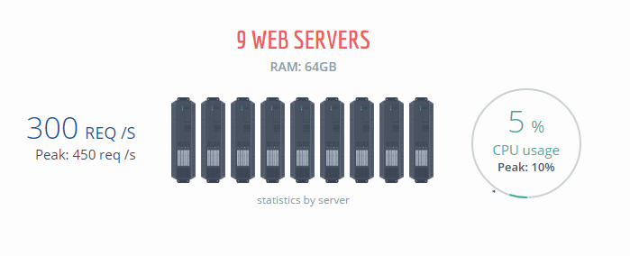
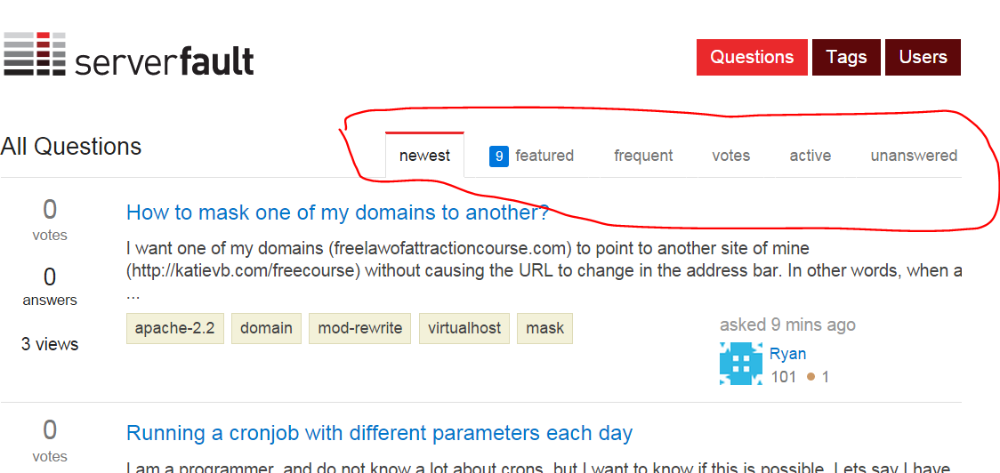

A Arquitetura
do Stack Overflow
Roberta Arcoverde / @rla4
Pragmatismo
/whois roberta
- recifense
- cientista da computação, UFPE, 2008
- mestre em informática, PUC-Rio, 2012
- programadora desde 2004
- full-stack developer na Stack Overflow desde 2014
- mãe do Dostoievski e do Turing

- começou em 2008
- 10M perguntas
- 18M respostas
- 50M visitantes únicos/mês
- top 50 sites mais acessados do mundo*
>140 sites
Apenas no último mês nós tivemos
- 1,468,389,303 page views
- 5,183,954,727 HTTP hits
- 71,562,833,811,315 bytes enviados
- 3,202,505,376 CDN hits
- 19,532,899,854 SQL queries executadas
- 81,505,688,410 comandos Redis
- 500,000 websockets concorrentes
- 18.2ms tempo médio de page load
tudo isso com apenas 9 servidores*
*mas 1 bastaria
http://stackexchange.com/about/performance**
**tá meio desatualizado, mas dá uma ideia
nosso DC em uma imagem*
*imagem originalmente apresentada pelo Marco (@sklivvz) em http://www.slideshare.net/howtoweb/marco-cecconi-stack-overflow-architecture...ou melhor, duas
| New York, NY | Denver, CO |
...só mais uma imagem...
galeria de fotos: http://imgur.com/a/X1HoY
comofas?
uma louca obsessão: performance!
time
|
http://stackexchange.com/about/team
stack
- c#, asp.net mvc
- less/jquery
- sql server
- elasticsearch
- redis
teh codez
muita emissão de IL, muito método estático
arquitetura monolítica
testes?
meta stackexchange!
isto é, testando direto com o usuário final :D
http://meta.stackexchange.com
comunidade é amor
http://meta.stackexchange.com/questions/71780/lol-debugging-are-we-stack-overflow-homepage-alerts-false
3 princípios básicos
- solução mais simples possível
- encontre os gargalos (medição)
- remova os gargalos
encontre os gargalos
https://github.com/MiniProfiler
encontre os gargalos II
https://github.com/opserver/Opserver
removendo os gargalos
é indispensável que todo desenvolvedor entenda profundamente como funcionam planos de execução
- todo dev é um DBA em potencial
- como funcionam índices (e seus trade-offs)
- paginação
- sargability
removendo os gargalos
removendo os gargalos
problemas de performance são bugs!
@Html.Partial("~/Views/Shared/PageTabs.cshtml", new PageTabs
{
Tabs = new List<TabItem>
{
new TabItem {Value = ShowViewData.Tab.Active, Title = _s("active")
new TabItem {Value = ShowViewData.Tab.Oldest, Title = _s("oldest")
new TabItem {Value = ShowViewData.Tab.Votes, Title = _s("votes")
},
UrlFormat = Question.UrlRelative + "?answertab={0}#tab-top",
CurrentSelection = Model.CurrentTab
})
cache all the things

removendo os gargalos
@Html.Partial("~/Views/Shared/PageTabs.cshtml", new PageTabs
{
Tabs = Current.LocalCache.GetSet<List<TabItem>>("question-show-tabs", (_1,_2) => new List<TabItem>
{
new TabItem {Value = ShowViewData.Tab.Active, Title = _s("active")
new TabItem {Value = ShowViewData.Tab.Oldest, Title = _s("oldest")
new TabItem {Value = ShowViewData.Tab.Votes, Title = _s("votes")
}, 24 * 60 * 60, 24 * 60 * 60),
UrlFormat = Question.UrlRelative + "?answertab={0}#tab-top",
CurrentSelection = Model.CurrentTab
})
design for minimal allocations
vs
design for testability
reinventando rodas!
- dapper
- opserver
- protobuf-net
- jil
- stackexchange.redis
- stackexchange.exceptional
- stackexchange.precompiler
dapper
nosso próprio ORM <3
var loginHistories = DB.Query<AccountLoginHistory>(
"select * from AccountLoginHistory where AccountId = @accountId")
https://github.com/StackExchange/dapper-dot-net
dapper
alta performance, através de emissão de IL e caching
conclusão
- SOA é legal
- microservices são legais
- injeção de dependência é legal
- testes são BEM legais
- ...mas não são pra todo mundo!
conclusão
- é bem pragmática (ou seria boring?) (nada de reflection, DI ou outros patterns legais)
- monolítica (nada de services, muito menos micro)
- não seguimos várias boas práticas :(
- gostamos de reinventar a roda (ORM, caching, perf monitors)
- funciona pra gente :)
- escolha as práticas que fazem sentido no SEU projeto
perguntas?
- twitter.com/rla4
- stackexchange.github.io
- stackexchange.com/work-here
outras apresentações/referências
- the architecture of stack overflow, by Marco Cecconi - http://www.slideshare.net/howtoweb/marco-cecconi-stack-overflow-architecture
- scaling stack overflow, by David Fullerton - https://speakerdeck.com/dfullerton/scaling-stack-overflow-qcon-nyc-2015